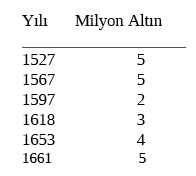

Büyük Bunalım (1571-1610):Köklü Değişim
16. yüzyıl sonlarında, 17. yüzyıl başlarındaki büyük bunalımı hazırlayan önemli gelişmeler olarak: büyük nüfus artışı, Avrupa’da savaş teknolojisinin ve gümüş bolluğunun etkisi altında Osmanlı klâsik askerî ve mâlî düzeninin sarsılması, Safavîler ve Habsburglarla uzun savaş dönemi ve onun doğurduğu mâlî bunalım göz önüne alınmalıdır.119
Daha 16. yüzyıl ortalarında, özellikle Şehzâde Mustafa ve Şehzâde Bayezid olayları sırasında, Anadolu’da şiddetli bir kaynaşma başlamıştı. Bir yandan askerî sınıfa geçme amacı ile rakip şehzâdeler hizmetine giren binlerce başıboş Anadolu köylü genci, yevmlüler, levendler adı ile bu kargaşayı desteklerken, öbür yandan timarı az veya timarsız eli-emirlü ve ma‘zul sipahiler, bu kaynaşmanın ön safında ortaya çıkmışlardır.120Öbür yandan, ilmiyye mesleğinin vergi bağışıklığı gibi ayrıcalıklarından yararlanmak isteyen, fakat soygunculuk ve hatta eşkiyalığa sürüklenen binlerce Anadolu delikanlısı, sûhte/softa adı altında medreselerin çatısı altında toplanıyor, yahut dağ başlarında kendi medreselerini veya çetelerini kuruyorlardı.121Eskiden Anadolu’nun fazla nüfusu için Balkanlar, bir taşma ve göç bölgesi idi, uclar ise askerî hizmete girmek isteyenlerin gönüllü, garip-yiğit adı ile koşuştukları bir er meydanı idi.
16. yüzyılın ikinci yarısında, bir yandan Avrupa’da yayılma durakladı; yeni timar olanakları kalmadı ve uc akıncı kurumu çöktü; öbür yandan, yukarıda söylediğimiz gibi, büyük nüfus artışı nedeni ile çorak Orta-Anadolu yaylasında nüfus baskısı güçlendi.122Bu nüfus taşmasının gerçek ölçüsü iyi bilinmiyor. Fakat birçok belirtiler, bu varsayımı doğrulamaktadır. Kıbrıs’ın fethinden sonra, 2 Eylül 1572 tarihli bir fermanla123 Anadolu, Karaman, Rûm, Zulkadıriyye (Dulgadır) vilâyetlerinde, toprak sıkıntısı çeken, vergi tahrîr defterlerine yazılmamış olan, bulunduğu yerden kaçarak başka taraflarda yerleşen veya ırgatlık yapan, toprak davaları bir sonuca vardırılmamış olanlar, şehirlerde ve köylerde işsiz güçsüz dolaşanların Kıbrıs’a sürgün gönderilmeleri emredilmiştir.124Böylece, yalnız dağlık Teke bölgesinden gidecekler, 5.720 hâne olarak saptanmıştır. Bunun yanında, kendi isteği ile gidenler, bütün göçmenlerin üçte birine yaklaşmıştır. Çağdaş İtalyan yazarı Calepio’ya göre, bu yolla Anadolu’dan Kıbrıs’a 20.000 göçmen gelip yerleşmiştir. Bunun yanında 1571’de adada, 1.500 yeniçeri ve 3.000 sipahi, koruyucu göreviyle bırakılmıştı. İran savaşları, 40 yıl (ara ile 1578-1618 döneminde) reâya aslından olan binlerce Anadolu delikanlısının, askerî kadrolara alınmasını gerektirmiştir. Koçi Bey bunları, ecnebî adı altında “Türk, Çingene, Tatar, Kürt, Laz, Yörük” diye anar. Bu reâya aslından binlerce genç, başlangıçta Kafkasya’daki fütuhat bölgelerinde timar sahibi, kale muhafızı ve gönüllü olarak bir dirlik ve kapı bulmuştu. Fakat bu yolla, Koçi Bey’in ve ondan önce Kitâb-i Mustatâb’ın (yazılışı 1620) şiddetle yakındıkları gibi, klâsik Osmanlı düzeninin temel ilkesi olan reâya ve askerî ayrılığı ilkesi bu yolla çiğnenmiş oluyordu. Öbür yandan, yönetimin ve askerî otoritenin yalnız ve yalnız pâdişah kullarına verilmesi ilkesi de unutulmuştu. Bunalımın nedenleri üzerinde çağdaş Osmanlı düşünürleri, ayrıca şu noktalar üzerinde dururlar: Pâdişahın mutlak vekîli sayılan veziriâzama bağlı Dîvân-i Hümâyûn’un ve büroların bağımsızlığı, bu dönemde ciddi olarak sarsılmış; başka bir deyimle, bürokratik merkeziyetçilik zedelenmiştir. Bunun başlangıcını, II. Selim’in tahta çıkmasıyla İstanbul’a beraberinde gelen yeni grubun, Veziriâzam Sokollu’ya karşı uğraşılarında görmekteyiz. Saray nedîmleri, kapıkulu zorbaları ve ulema, devlet işlerine karışmışlar, bürokrasinin devlet çıkarlarını ve düzenini her şeyin üstünde tutan geleneksel bağımsızlığını çiğnemişlerdir. Böylece, imparatorluk yönetiminin klâsik kanûn ve düzenleri bozulmaya başlamıştır. Bunun en önemli sonuçlarından biri, Fâtih tarafından devletleştirilen toprakların tekrar geniş ölçüde mülk ve vakıflar halinde devlet kontrolünden çıkmaya başlamasıdır. Şunu da ekleyelim, ulemanın örfî kanûnlar ve yönetim alanına karışma girişimleri, bu dönemde arttı. Kanunî Süleyman döneminde Şeyhülislâm Ebussuûd Efendi, örfî kanûnları ve yönetim düzenlerini 9. yüzyıl fukahâsına göre şerî prensiplerle yorumlamaya çalıştı.125Eskiden, yalnız örfî kanûn konusu olan sorunlar, ondan sonra gittikçe daha çok istiftâ (fetvâ alma) konusu olmaya başladı. 16. yüzyıl sonundaki bunalım döneminin sonucunda, I. Ahmed devrinde toplanıp düzenlenen Kanûnnâme-i Cedîd, daha çok fetvâlarla dolu bir dergi halini almıştır.126 (Fâtih ve Kanunî kanûnnâmelerinde bir tek fetvâya rastlanmaz). Bu şerîatçılık yönetimi, bürokratların yeni durumlar karşısında serbest çalışmasını kısıtladı ve Sünnî tutuculuğu güçlendirdi. 1617-1632 döneminde, yeniçerilerin ayaklanmaları ve haremle (Kösem Sultan) işbirliği yaparak zorbalıkla hükümet otoritesini kontrolleri altına almaları, özellikle mâlî kargaşa ile ilgilidir.
Çağdaş Osmanlı bürokrat düşünürleri, çökmenin temel nedenini, Kanunî döneminde en yüksek gelişme düzeyine ulaşmış olan klâsik Osmanlı kurumlarının bozulmasına bağlarlar. Bu görüşlerde kuşkusuz büyük bir gerçek payı vardır. Modern tarih incelemeleri bu yorumları desteklemektedir. Ancak, bu Osmanlı düşünürleri, doğal olarak geleneksel devlet ve toplum felsefesi çerçevesinde yorum yaparlar; çok kez, gerçek nedenleri görmekten ve değişikliklerin gerçek anlamına inmekten uzaktırlar. Yukarıda temel nedenler arasında nüfus artışına değindik. Burada, birbirine sıkı sıkıya bağlı askerî ve mâlî değişiklikleri ele alacağız.
Hatırlamak gerekir ki, 1533’te Osmanlı Devleti müttefiki Fransa’ya 100.000 altın yardım yapmış, sonra aynı devlet bir milyon altın daha istemiştir. Fakat çok geçmeden Osmanlı Devleti, II. Philip’in İspanya’sı gibi, dünya boyutlarında egemenlik girişimlerinin yükü altında ezildi. Savaş, gittikçe daha masraflı bir hal aldı. İspanya ve Almanya Habsburglarıyla karada ve denizde büyük çekişme, Osmanlı İmparatorluğu’nun yapısında derin izler bırakan iki önemli olayla başlamıştır: Habsburglara karşı orduyu ateşli silâhlarla donatılmış ağır piyadeden kurulu bir ordu haline getirme zorunluluğu ortaya çıkmış; ok-yay, kılıç ve mızraklı timarlı sipahisi savaş değerini kaybettiğinden timar rejimi ihmal edilmiş ve dağılmaya bırakılmıştır. Öte yandan, özellikle donanma yapımı çok büyük masraflar getirmekte idi. Bir kadırganın bakım ve yönetim masrafı o zamanlarda yılda 6.000 altın duka idi. Osmanlı donanması 200 kadırgadan kurulu olduğuna göre, sadece donanmanın yıllık gideri 1.200.000 dukaya varmakta idi. İran savaşları, Osmanlı bunalımının başlıca nedenlerinden biri olarak yakından incelenmelidir. 1578-90 yıllarında Azerbaycan ve Şirvan’ın ele geçirilmesi, yalnız Osmanlı askerî düzeni için değil, aynı zamanda Osmanlı mâliyesi için de yıkıcı bir nitelik kazanmıştır.127Memleket ahalisi kaçtığından veya direndiğinden oradaki işgal kuvvetlerini Anadolu’dan beslemek gerekiyordu. 1603’ten sonra İranlılar bu kuvvetleri geri atınca, bunlar Anadolu’ya gelip döküldüler. Avusturya’ya açılan savaş (1593-1606) daha çok bu askerleri oyalamak ve dirlik bulmak amacını güdüyordu.
1593-1606 Avusturya savaşlarında, timarlı sipahi yerine tüfekli piyade kullanılması gereği dolayısı ile, yeniçerilerin sayısı çok artırıldığı gibi (1527’de 7.886, 1610’da 37.627 kişi), Anadolu’dan başıboş köylülerden ücretle tüfekli sekban ve saruca askeri yazılmaya başlandı. Barış dönemlerinde sekban askerine gereksinim kalmadığı zamanlarda, ücretsiz kalan bu eli tüfekli ve yeniçeri subayları kumandasında örgütlenmiş gruplar, Anadolu’da halkı harâca kesmeye ve saldırılara başladılar. Timarları yetmeyen veya elinden alınan sipahiler de, bu soyguna katıldı. İşte Anadolu’yu kasıp kavuran Celâlî haydut grupları bu yolla ortaya çıktı.128Bu amansız soygunlar ve katiller yüzünden köylüler, kitle halinde kaçmaya başladılar; bu durum Anadolu tarihinde Büyük Kaçgun diye anılır. Anadolu baştan başa yıkıldı yakıldı. Bu durum, İranlılara karşı saldırıya geçildiği 1603-1610 yılları arasında, devleti kötürüm etti. Rumeli’de bu kertede yaygın olmamakla beraber, özellikle Makedonya bölgesi ile kuzey Bulgaristan kargaşalıktan kendini koruyamadı. Anadolu’daki anarşi yüzünden, buradan halkın Rumeli’ye kaçıp sığındığını biliyoruz. 17. yüzyıl savaş dönemlerinde, özellikle 1683-1699 yıllarında bu anarşik durum geri gelecektir. Osmanlı ordusu artık, çeşitli ad alan bu tüfekli ücretli askerlerden vazgeçemezdi. Sekban ve saruca ve yeniçeri ulûfe aldıklarından merkezî hazinenin gelir kaynaklarını artırmak gerekiyordu. Öte yandan, 1571’den sonra devlet, Akdeniz’de İspanya’ya karşı kuvvetli bir donanmayı sürekli hazır tutmak zorunluluğunda idi.
Osmanlı Devleti, merkezî hazinenin gelir kaynaklarını artırmak için doğrudan doğruya hazineye gelen vergilerin, yani olağanüstü bir ek vergi olan avâriz-i divâniyye’yi artırmak zorunda kaldı. Önceleri, özellikle savaş zamanlarında toplanan avâriz-i divâniyye artık her yıl toplanan bir nakdî vergi haline geldi ve miktarı da sürekli olarak artırıldı (kişi başına 1582’de 40; 1600’de 240; 1661’de 535 akça. Gayrımüslimlerin ödediği cizye, 1574’te 40 akça iken 1591’de 70; 1596’da 150; 1630’da 240; 1691’de 280 akçaya çıkarıldı).1291596 tarihli adâletnâme, kanûnsuz yollarla, 150 akçalık cizyenin 500 veya 600 akçaya kadar çıktığını belirtmektedir. Ancak, akçada âyar düşürülmesi (tagşîş) sonucunda akçanın değeri de çok düşmüş olduğundan, bu vergi ve gider artışlarının gerçek oranlarını bulmak için altın üzerinden hesaplamak gerekir. Gerçekten bir altın 1527’de 57, 1583’te 60, 1584’te 120 akçadır. Sadece merkezî hazinenin yıllık geliri altın hesabı üzerinden şöyle bir gelişme gösterir:130

1590 yılından sonra hazine daima büyük açıklar vermeye başladı. Bu dönemde, avâriz ve cizyenin artması ve bu vergilerin toplanması sırasında görevin kötüye kullanımı yüzünden reâya arasında hoşnutsuzluk, protesto olarak yerini yurdunu bırakıp kaçmalar yaygınlaştı.
Osmanlı mâliyesini altüst eden bir olay da, gümüş akçanın tagşîşi, yani gümüş miktarının azaltılmasıdır. 1580’lerden itibaren Avrupa’dan sel gibi ucuz gümüşün gelmesi ve Avrupa kalp paralarının istilâsı bunun başlıca nedenidir. Osmanlı Devleti Avrupa’dan gümüş sağlamak için kendi millî para sistemini bırakıp her çeşit paranın girişini serbest bırakmıştı. Fakat görünüşü çekici kalp paralar piyasayı kaplayınca, gümüş miktarı itibarî değerinden yüksek olan akça, Gresham kanûnu sonucu piyasadan kaçmaya başladı. Bunu fark eden mâliye bu yüzden akçada gümüşü azalttı ve akça kesadı’na böylece bir çare bulunmak istendi. Fakat bu da enflasyonu körükledi.131
Osmanlı parasında bu dönemdeki büyük dalgalanmalar, çeşitli biçimde yorumlanmıştır. Olay akçanın yüzde yüz değer kaybetmesi, Amerikan ucuz gümüşünün akını, nüfus ve talep artışı, mal darlığı veya devlet bütçesinde para bulmak için tagşîş, Avrupa kalp paralarının piyasayı istilâsı ve akçanın ayarlanması zorunluluğu ile açıklanmıştır. Aslında, bütün bu ögeler, para bunalımında birlikte etkin olmuştur. Bu durum, vergilerin ayarlama yolu ile yükseltilmesi sonucunu getirdiği gibi, timar rejiminde de derin etkiler yapmıştır. Zira enflasyondan sonra timarları oluşturan vergiler artırılmadığı için sipahilerin timar gelir miktarı gerçekte küçülmüş, bunun üzerine timar sipahileri seferden kaçmaya veya birtakım kanûnsuz yenilikler (bid‘atlar) çıkararak reâyadan türlü adlar altında para sızdırmaya, böylece zararlarını gidermeye çalışmışlardır. Bu dönemde, İstanbul’da sık sık görülen kapıkulu sipahi ve yeniçeri ayaklanmaları da, akçadaki kararsızlıkla ve geçim sıkıntısı ile doğrudan ilişkilidir.
Bu derin sosyal, askerî ve mâlî sarsıntılar sonucunda, 17. yüzyılda artık Osmanlı Devleti, 16. yüzyıldaki konumunda değildir. Osmanlı tarihinin birinci klâsik dönemi böylece kapanmış olmaktadır. Artık ortaçağ ekonomik ve mâlî koşullarından doğmuş olan timar rejimi çökmüş, yerini ateşli silâhlarla donatılmış bir ücretli ordu almış, böylece ürünle ödemeye dayanan vergi sistemi yerine daha çok nakdî vergilere dayanan bir mâliye ve merkezî hazine sistemi gelmiştir. Osmanlı akçası yerine Batı-Avrupa paraları, özellikle İspanyol real’leri (riyal) ve Hollanda riksdal’leri (esedî guruş) piyasaya hâkim olmuş ve Osmanlı ekonomisi zamanla Avrupa merkantilist sistemine tâbî bir ekonomi haline gelmiştir. Osmanlı Devleti, uzun ve pahalı savaşların ve Anadolu’daki yıkıcı kargaşalıkların yükü altında ezilmiş, kaynaklarını kaybetmiş ve tüketmiştir. Devlet, yeni koşullara elverişli bir uyum için gereken maddî ve manevî öğelerden yoksun olduğu için gerçek bir reform yapamamıştır. Bu durum, 18. yüzyılda merkezî otoritenin zayıflaması ve âyân rejimiyle birlikte gerçek bir feodalleşme ile sonuçlanacaktır. Bununla beraber, son incelemeler göstermiştir ki, mutlak bir çöküş yerine imparatorluk, gerçekte yeni koşulların istediği önlemleri alarak bir uyum sağlamış ve daha üç yüzyıl süren yeni bir denge meydana getirebilmiştir.
119 Doğu-Avrupa ve bu arada Osmanlıların geri kalmışlığı üzerine. The Origins of Backwardness in Eastern Europe, Economics and Politics from the Middle Ages Until the Early Twentieth Century, yay. D. Chirot, Berkeley, 1989; bu cilt içinde Osmanlılara ait bölüm: F. Adanır, “Tradition and Rural Change in Southeastern Europe During Ottoman Rule”, s.131-175; Türkiye’nin geri kalmışlığı sorunu, II. Dünya Savaşı’ndan sonra en çok Türk aydınlarını düşündürmüş ve bir yığın yayına vücut vermiştir. Bu yayınların büyük bölümü Marksist teoriyi izlemiştir. Genel olarak bu teorinin tartışması için bkz. B. Chandra, “Karl Marx, His Theories of Asian Societies, and Colonial Rule”, Review, V-1 (1981), s. 13-91; A.M. Bailey ve J.R. Llobera, The Asiatic Mode of Production: Science and Politics, London, 1981; Doğu-Avrupa’da Osmanlı toplum yapısı başlangıçta Marx’ın feodal toplum teorisine göre yorumlanmıştır. Bu konuda en esaslı inceleme: V. P. Moutatcieve, Agrarian Relations in the Ottoman Empire in the 15th and 16th Centuries, New York, 1988; Sosyal yapıyı Marx’ın “Asya Tipi Üretim Tarzı” teorisi bakımından işleyenler, S. Divitçioğlu, Asya Tipi Üretim Tarzı ve Osmanlı Toplumu, İstanbul, 1967; S. Yerasimos, “Le mode de production asialtique et la societe Ottomane”, yayınlanmamış yüksek lisans tezi, ve çev. B. Kuzucu, Azgelişmişlik Sürecinde Türkiye, 3 cilt, İstanbul, 1974; H. İslamoğlu ve Ç. Keyder, “Agenda for Ottoman History”, Economy and Society, V-2 (1976), s. 178-196; Asya Tipi Üretim Tarzı’nı Türk yazarları Divitçioğlu’ndan beri Osmanlı’ya özgü farkları belirterek ılımlaştırırlar; daha genel biçimde ele alanlar arasında bkz. M.A. Şevki, Osmanlı Toplumunun Sosyal Bilimle Açıklanması, İstanbul, 1968; M. Sencer, Osmanlı Toplum Yapısı, İstanbul, 1969, s. 186-378; B. Boratav, Tarımsal Yapılar ve Kapitalizm, Ankara, 1980; R. Aktan, Türkiye İktisadı, 3. baskı, Ankara, 1978; Ç. Keyder, Toplumsal Tarih Çalışmaları, Ankara, 1983; Marx etkisi ile genel sosyolojik analiz için bkz., İbrahim Yasa, Türkiye’nin Toplumsal Yapısı ve Temel Sorunları, 2. Baskı Ankara, 1973; J. Hindernik ve M. Belik Kıray, Social Stratification as an Obstacle to Development, A Study of Four Turkish Villages, New York, 1970; Osmanlı ekonomisinin durağan (stagnant) karakteri üzerinde tartışmalar da, tarihî verilere dayanacak yerde çoğu zaman olayları teoriye uydurma biçiminde gelişmiştir. “Asya Tipi Üretim Tarzı” teorisi ile I. Wallerstein’in kapitalist Dünya Ekonomisi ve onunla bütünleşme teorisini kaynaştıran ve tarihi veriler ışığında yeni bir yorum getirme çabası için bkz. The Ottoman Empire and the World-Economy, yay. H. İslâmoğlu-İnan, Cambridge, 1987, s. 1-26; H. İslamoğlu-İnan., “Les paysans, le marche et l’Etat en Anatolie au XVIe siècle”, Annales, 5 (1988), s. 1025; toprak ve köylü üzerinde belli fiskal-politik gereklerin doğurduğu çift-hâne ve kentte hirfet rejimi (infra) üretim tarzına bağlanan toplum yapısı teorisinin Max Weber sosyolojisi ile değişik biçimde yorumu için bkz. K. Wittfogel, Oriental Despotism, A Comparative Study of Total Power, 5. Baskı, New Haven ve Londra, 1964; Wittfogel Osmanlı İmparatorluğu’nu önemli bir toplum tipi olarak alır, fakat sulamanın esas olduğu Mezopotamya, Mısır, Çin imparatorlukları yanında Osmanlı despotizmi için özel bir üretim tarzı bulamaz; bize göre büyük hidrolik devlet girişimi yerine Osmanlı örneğini belirleyen üretim tarzı, çift-hâne sistemidir; bunun için bu bkz. H. İnalcık, “Köy, Köylü ve İmparatorluk”, Osmanlı İmparatorluğu, Toplum ve Ekonomi, İstanbul, 1993, s. 1-14; daha geniş bir biçimde bkz. H. İnalcık, The Middle East and the Balkans under the Ottomans: Selected Papers on Economy and Society, Bloomington, 1992; Osmanlı’nın toprağı ve köylü emeğini mutlak devlet kontrolü altında tutması, mîrî sistem, klâsik dönemde Osmanlı rejiminin temeli ve ana karakteridir; çift-hâne sistemi olarak nitelendirdiğimiz bu “üretim tarzı”nı belirleyen baskı veya koşul, İslâm’ı, gittikçe güçlenen bir Haçlı Avrupası karşısında koruma, direnme ve karşı saldırıya geçip Hak sözünü dünyada egemen yapma çabası, yani gazâ ideolojisidir. Osmanlılar toprağı ve köylü emeğini kontrol veya “despotizmi” bununla haklı göstermiş ve topluma kabul ettirmiştir. 13. yüzyılda iki yandan, Mogol ve Haçlı baskısı altında yok olma karşısında kalan İslâm âlemi, Mısır ve Suriye’de Memlûklerin, Anadolu’da Osmanlıların askeri rejimini bir çıkış yolu olarak benimsemiştir. Bu, bir “meşrûlaştırma” ideolojisi olup asıl temel sosyal-ekonomik yapıyı, çift-hâne sisteminde aramak gerekir. Bizim bu açık yorum tarzımız, son yayınlarda hayretle görüyoruz ki, ters ve noksan biçimde izlenmekte ve bize ait olmayan düşünceler bize atfedilmektedir, meselâ bkz. C. Imber, “The Ottoman Dynastic Myth”, Turcica, XV (1987), s. 7-27; bu yazıdaki esas düşünceler için bkz. H. İnalcık, “Pâdişâh”, İslam Ansiklopedisi (IA), IX (1969), s. 491-495; 1964’te çıkmış olan bu yazıda (s. 492-493) hânedânının hâkimiyetini “meşrûlaştırmak” amacı ile, Osmanlıların çeşitli rakip Müslüman hânedânlara karşı hükümdarlık haklarını ve hâkimiyet kaynağını Orta-Asya hanlık geleneğine, Selçuk sultanlarının vârisliğine veya doğrudan Tanrı tarafından verilmiş olduğuna bağladıklarını belirtmiştik. Bir grup sosyolog, Osmanlı İmparatorluğu’nun politik sosyoloji bakımından yapısını, merkeziyetçi-bürokratik imparatorluklar çerçevesinde inceler. Osmanlı örneğine önemli bir yer ayıran böyle bir teori için bkz. S. N. Eisenstadt, The Political Systems of Empires, New York, 1969.
120 Bkz. şerafeddîn Turan, Kanunî’nin Oğlu Şehzâde Bayezid Vakası, Ankara, 1961; Mustafa Akdağ, Büyük Celâlî Karışıklıklarının Başlaması, Ankara, 1963; M. Cezar, Leventler, İstanbul, 1965.
121 M. Akdağ, “Türkiye Tarihinde İçtimaî Buhranlar serisinden: Medreseli İsyanları”, İFM, XI (1949-50), s. 361-387.
122 M. Akdağ, “Türkiye Tarihinde İçtimaî Buhranlar serisinden: Medreseli İsyanları”, s. 361-387.
123 Nüfus baskısı üzerine: M.A. Cook, Population Pressure in Rural Anatolia, 1450-1600, Londra, 1972; H. İnalcık, “The Impact of the Annales School on Ottoman Studies and New Findings”, Review, I (1978), s. 86-90.
124 Ö. L. Barkan, “Bir İskân ve Kolonizasyon Metodu Olarak Sürgünler”, İFMXV (1949-50), s. 550-553; H. İnalcık, “Kıbrıs’ta Türk İdaresi Altında Nüfus”, Kıbrıs ve Türkler, Ankara, 1964, s. 27-31.
125 B. Lewis, “Ottoman Observes of Ottoman Decline”, Islamic Studies, I-1, Karachi, 1962, s. 71-87; T. Gökbilgin “XVIII. Asırda Osmanlı Devletinde Islâhat İhtiyaç ve Temayülleri ve Kâtip Çelebi”, Katip Çelebi Hayatı ve Eserleri Hakkında İncelemeler, Ankara, 1957, s. 101-119. Çöküş dönemi üzerinde belli başlı Osmanlı yazarları: Mustafa Âlî üzerinde de bkz. C. Fleischer, Bureaucrat and Intellectual in the Ottoman Empire: The Historian Mustafa Âlî (1541-1600), Princeton, 1986; M. İpşirli, “Hasan Kâfî ve Devlet Düzenine Ait Eseri: Usûllü’l-hikem fi Nizâm-i’l-Âlem” Tarih Enstitüsü Dergisi, X-XI (1979-1980), s. 239-278; XVII. yüzyıl için bkz. Koçi Bey Risalesi, yay. A.K. Aksüt, İstanbul, 1939; Y. Yücel, Osmanlı Devlet Teşkilâtına dair Kaynaklar: Kitâb-i Müstetâb, Kitabu Mesâlihi’l-Müslimîn ve Menâfi’ül-Mü‘minîn, Hırzü’l-Mulûk, Ankara, 1988.
126 P. Hörster, Zur Anvendung des Islamischen Rechts im 16. Jarhundert. “Die juristischen Darlegungen” (Maruzat) des Schejch ul-Islam Ebu’s Su’ud (ges. 1574), Stuttgart, 1935. I. Ahmed dönemiyle bağlantılı olan kanûnlar için bkz. “Osmanlı Kanûnnâmeleri”, Millî Tetebbular Mecmuası, I, İstanbul, 1331 (1913), s. 49-112, 305-337.
127 B. Kütükoğlu, Osmanlı–İran Siyasî Münsâsebetleri, I, İstanbul, 1962.
128 Bu konuya ait malzeme, Anadolu için: Ç. Uluçay, Saruhan’da Eşkiyalık ve Halk Hareketleri, İstanbul, 1944; idem, 18. ve 19. Yüzyıllarda Saruhan’da Eşkiyalık ve Halk Hareketleri, İstanbul, 1955; H. İnalcık, “Adâletnâmeler”, Belgeler, III; Celâlî ayaklanmalarının ortaya çıkmasındaki ekonomik ve sosyal nedenler hakkında bkz. M. Akdağ, “Celâlî Fetreti”, DTCFD, XVI-1-2 (1958), s. 53-107; M. Akdağ, Celâlî İsyanları, 1550-1603, Ankara, 1963; M. Akdağ, “Osmanlı İmparatorluğunun Kurtuluş ve İnkişafı Devrinde Türkiye’nin İktisadî Vaziyeti”, Belleten, XIII (1949), s. 497-564, ile XIV (1950), s. 319-418. Tüfek kullanılmasının 16. yüzyıl ikinci yarısında bütün Orta-Doğu ülkelerinde yayılması ve halkın tüfeği kolaylıkla elde etmesi temel sorun olup Celâlîler üzerinde çalışanların gözünden kaçmaktadır: bkz. H. İnalcık, “The Socio-political Effects of the Diffusion of Fire-Arms in the Middle-East”, War Technology and Society in the Middle East, Londra, 1974, s. 195-217; H. İnalcık, “Military and Fiscal Transformation in the Ottoman Empire, 1600-1700”, Archivum Ottomanicum, VI (1980), s. 283-337; kapısız asker ücretle hizmetini devlete, paşalara sunmakta, bunu bulamayınca eşkiya gruplarına Celâlîlere katılmakta idi. Balkanlar’da haydutların (hayduklar) çoğalması Anadolu’da Celâlîlerin arttığı zamanlara rastlamaktadır. Birçok haydutun Martolos ve Voynuklar arasından geldiğini biliyoruz. Rumeli’deki eşkiyalar için bkz. Turski izvori za aidutstvoto i aramijstvoto vo Makedonia, I (1620-1650), II (1650-1700), yay. A. Matkovski, Skopje, 1961; A. Matkovski, Turski dokumenti za istorijata na makedoniskiot narod c. I, 1607-1623, Skopje, 1963; D. Spova, Makedonja vo XVI i XVII vek. Dokumenti od carigradskite archivi (1557-1645), Skopje, 1955; F. Adanır “Heiduckentum Osmanische Herrschaft”, Südest Forschungen, 41 (1992), s. 43-116. B. Cvetkova, “Mouvements antifeodoaux dans les terres bulgares sous domination Ottomane du XVIeme au XVIIIeme siecle” Etudes Historiques, II, Sofia, 1965, s. 149-68. Bu hareketlerde hem bir sınıf kavgası hem millî bir karakter arayan adı geçen Balkanlı araştırıcılar, bu tarihlerde Osmanlı devlet ve topluluğunu bütünü ile sarsan diğer büyük tarihî değişiklikleri gözden kaçırmaktadır.
129 Bütçe açıkları için bkz. A. Tabakoğlu, Gerileme Dönemine Girerken Osmanlı Maliyesi, İstanbul, 1985; H. İnalcık, “Djizya”, EI2, II, s. 562-566. EI2, II, s. 562-566.
130 Bkz. H. İnalcık, “Osmanlı İmparatorluğu’nun Kuruluşu ve İnkişafı Devrinde Türkiye’nin İktisadi Vaziyeti Üzerine Bir Tetkik Münasebetiyle” Belleten, XV (60), Ankara, 1951, s. 656-66; Ö. L. Barkan “Price Revolution”, IJMES, VI; Halil Sahillioğlu, “The Role of International Monetary and Metal Movements in Ottoman History, 1300-1750”, Precious Metals in the Later Medieval and Early Modern World, Durham, 1983; C. Kafadar, “Les Troubles monétaires de la fin du XVIeme siècle et la prise de conscience Ottoman du declin”, Annales, E.S. c. 2 (1991), s. 381-400.
131 Bkz. Ö.L. Barkan “Price Revolution”, IJMES; Halil Sahillioğlu, “The Role of International Monetary and Metal Movements in Ottoman History, 1300-1750”, Precious Metals in the Later Medieval and Early Modern World, Durham, 1983; C. Kafadar, “Les Troubles monétaires de la fin du XVIeme siècle et la prise de conscience Ottoman du declin”, Annales, E.S. C. 2 (1991), s. 381-400.